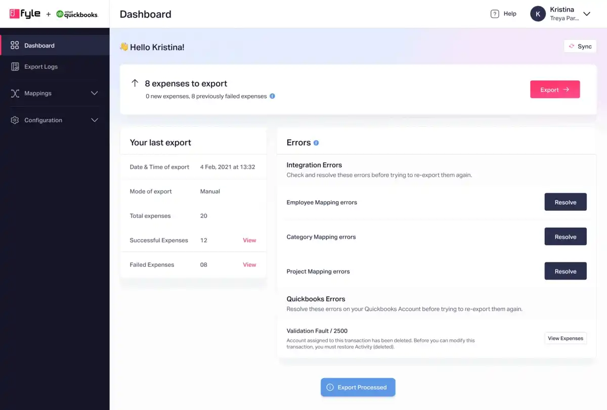
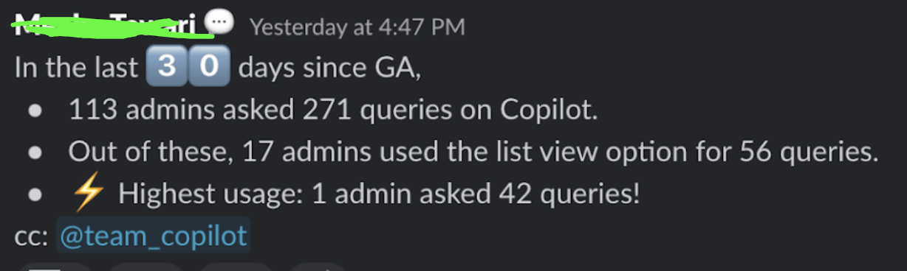

Work highlights
Projects that I have led at Fyle and its impact. A majority of the initiatives were part of retention/churn business strategy.
NB: Some case studies are unavailable for certain highlights. In others, the images became blurry when Fyle migrated from one platform to another.
QBO-Fyle Accounting Integrarion Platform
The platform enables accountants to export expenses from Fyle to QBO. The team initially built an MVP version, but as the business grew, experience-related problems emerged, leading to issues with efficiency, dependency on the customer success team, and scalability. View case study
Impacts
- The adaptation rate for the new design reached 95% within a quarter.
- 57% of customers shifted to new designs without our nudge.
- The time taken for setting up integration was reduced from 5 -7 days to 15min.
- Customers took less than 20 seconds to resolve mapping errors.
- On average, we received a rating of 4.46/5.

Fyle Copilot AI
The initiative started as an MVP to explore AI capabilities in the expense management space.
While the larger goal was to enable users to "Ask anything," we began with a smaller scope, such as instantly searching through KB articles instead of browsing 100+ articles and providing analytics capabilities based on user queries.
Impacts
It is still in the early stages. After 30 days of GA, these were the stats—a solid starting point. The initial feedback has given us plenty of opportunities for improvement.
This feature is currently unique in expense management market.
